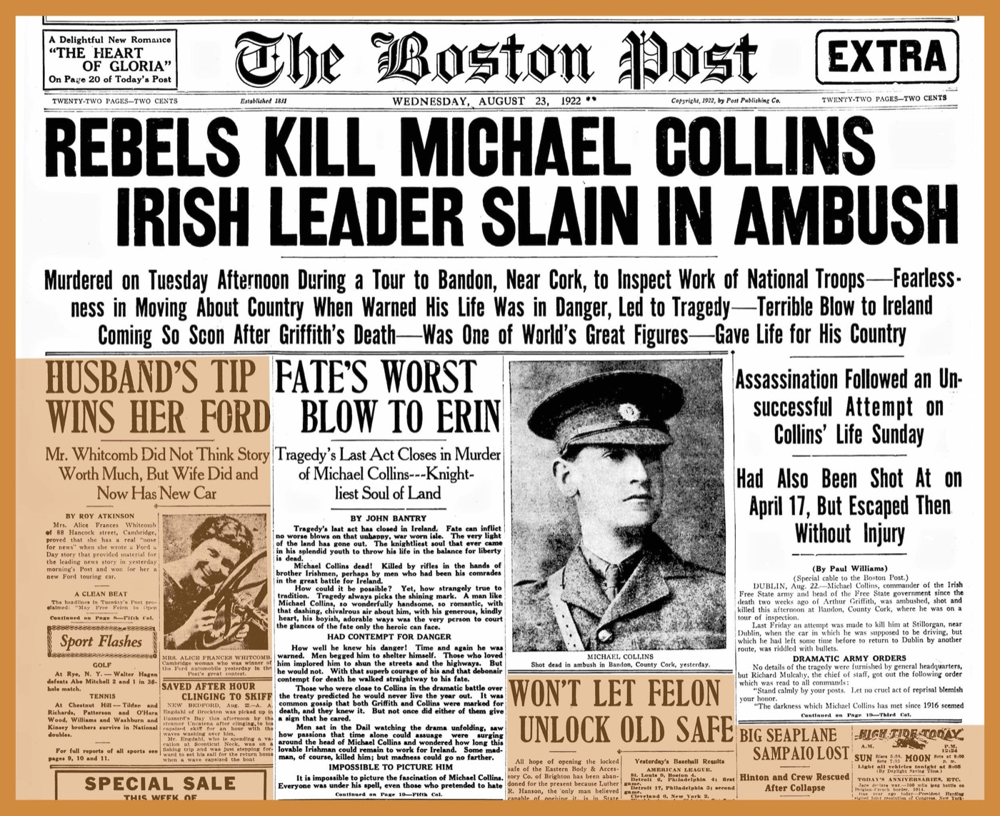

Executive Summary
보스턴 공공도서관과 하버드 로스쿨 도서관 산하 Institutional Data Initiative가 2026년 8월 기술 보고서 한 편을 공개했습니다. 1795년부터 1930년까지 발행된 공개 도메인 신문 스캔 1,473,635장을 열다섯 단계 파이프라인에 통과시켜 구조화 데이터셋으로 만들었고, 파이프라인과 그 안에서 쓴 작은 모델들까지 함께 내놓았습니다.
읽을 만한 대목은 규모가 아니라 비용입니다. 논문은 같은 분량의 토큰을 프런티어 모델 API로 만들었다면 25만에서 80만 달러가 들었을 것으로 추산하고, 자기들이 소유한 GPU 노드에서 실제로 돌린 것을 임대 가격으로 환산하면 약 2만 5천 달러라고 적었습니다. 다만 초록의 "워크스테이션급 하드웨어에서 돌아갈 만큼 계산적으로 절약적"이라는 문구는 설계 목표이지 실제 가동 사양이 아닙니다. 그 절약의 대가가 처리량이라는 것도 논문이 같은 자리에 적어 두었습니다.
열다섯 단계 가운데 시간을 먹는 것은 OCR 두 단계뿐이고 나머지는 대부분 몇 분 안에 끝납니다. 공정을 잘게 쪼개 놓은 덕분에 어느 단계가 얼마나 걸렸는지, 어디서 판정이 흔들리는지가 전부 숫자로 남았습니다. 소장 기관이 자기 자료의 정제 공정을 쥔다는 것은 그 숫자까지 자기 손에 쥔다는 뜻입니다.
주요 수치
앞의 두 숫자는 이 파이프라인이 만들어 낸 것과 그 대가입니다. 뒤의 두 숫자는 그 결과물이 어느 단위로 쪼개져 있고 어디가 아직 약한지를 보여 줍니다.
출처: arXiv:2608.18972, Institutional Newspapers Pipeline 기술 보고서(2026-08)
163억
VLM OCR이 뽑아낸 토큰
o200k_base 기준 16,302,004,429개. 같은 스캔을 Tesseract로 읽으면 146.6억
2.5만 달러
논문이 잡은 컴퓨팅 비용
약 1,650시간을 임대 환산한 추정치. 프런티어 API였다면 25만~80만 달러
8,314만
잘라 낸 크롭
기사·광고·사진 단위로 스캔당 평균 56.4개. 모든 후속 처리의 기본 단위
80.8%
읽기 순서 위치 정확도
micro 기준. 스캔별로 따로 재는 macro는 72.1%
147만 장에서 163억 토큰
역사 신문은 컴퓨터로 다루기 까다로운 자료입니다. 지면은 빽빽하고 단은 불규칙하며, 장식체 표제와 표가 섞여 있어 범용 도구가 잘 듣지 않습니다. 논문은 이 어려움을 먼저 적어 둔 뒤, 보스턴 공공도서관 소장분 가운데 1795년에서 1930년 사이에 발행된 스캔 1,473,635장을 대상으로 자기들이 만든 파이프라인을 돌린 결과를 내놓았습니다. 저작권이 살아 있을 수 있는 자료는 처음부터 뺐습니다. 1931년 이전 발행분만 넣었고, 그 판단은 보스턴 공공도서관이 가진 이슈 단위 메타데이터로 했습니다.

결과물은 스캔 이미지 더미가 아닙니다. 지면은 8,314만 개의 크롭으로 쪼개졌고, 크롭마다 OCR 텍스트와 좌표, 유형, 언어, 개체명, 주제, 임베딩이 붙었습니다. 크롭은 기사 한 꼭지나 광고 한 칸처럼 끊기지 않고 이어지는 텍스트 또는 시각 요소를 감싼 사각형을 뜻합니다. 표제는 그것이 이끄는 기사와 분리되지 않고, 그림 위주 광고는 대체로 크롭 하나에 통째로 담깁니다.
언어 분포에서 이 컬렉션의 성격이 드러납니다. 언어 코드가 붙은 크롭의 97.61%가 영어이지만 나머지 꼬리가 짧지 않습니다. 이디시어가 98만 3,375개 크롭으로 1.18%, 독일어가 0.56%, 스웨덴어가 0.46%, 프랑스어가 0.09%입니다. 논문은 이것을 보스턴 공공도서관이 소장한 이민자 신문의 흔적이라고 설명합니다. 전체로는 73개 언어 코드가 나왔고, 상위 열 개가 99.97%를 차지합니다.
쪼개 놓으면 세어 볼 수 있는 것이 생깁니다. 최종 분류 기준으로 가장 많은 크롭은 기사가 아니라 광고인데, 토큰의 다수는 기사 쪽이 쥐고 있습니다. 이 두 곡선의 간격은 시대에 따라 벌어집니다. 1860년대까지는 광고가 차지한 지면 면적과 광고가 실어 나른 텍스트 분량이 얼추 비슷했는데, 1870년대부터 면적이 앞서기 시작해 1920년대에는 차이가 약 15퍼센트포인트까지 커집니다. 광고가 점점 시각물로 바뀌어 간 흔적이라고 논문은 봅니다. 스캔 더미 상태로는 던질 수 없던 질문입니다.
만든 쪽은 하버드 로스쿨 도서관의 Institutional Data Initiative이고, 자료와 도메인 지식은 보스턴 공공도서관이 댔습니다. 두 기관은 2025년에도 함께 Institutional Books라는 도서관 장서 코퍼스를 냈고, 그 코퍼스는 이후 다른 연구팀의 언어모델 학습에 실제로 쓰였습니다. 이번 결과물은 허깅페이스 컬렉션과 깃허브 저장소에 올라가 있고, 에이전트가 이 데이터를 바로 쓸 수 있도록 Agent Skill 파일까지 함께 배포됐습니다.
스캔 한 장이 데이터가 되기까지
파이프라인은 열다섯 단계입니다. 스캔을 가져와 캐싱하고, 크롭으로 자르고, 두 가지 OCR을 각각 돌리고, 유형과 언어를 판정하고, 읽기 순서를 잡고, 개체명과 주제를 붙이고, 마지막에 임베딩을 계산합니다. 아래 도식은 그 열다섯 단계를 성격별로 여섯 덩어리로 묶은 것입니다.
2.1먼저 자르고, 나중에 이름을 붙인다
첫 단계는 지면을 크롭으로 자르는 일입니다. 여기서 이 팀이 내린 결정 하나가 뒤의 모든 것을 좌우합니다. 자르는 일과 이름 붙이는 일을 한 모델에 맡기지 않았습니다. 지면의 크롭 대부분은 기사 아니면 광고라서, 탐지와 분류를 한꺼번에 학습시키면 클래스 불균형이 심해져 양쪽 성능이 같이 떨어진다는 판단이었습니다. 그래서 탐지는 YOLO26x 하나로 유형에 관계없이 잘라 내기만 하고, 유형 판정은 뒤로 미뤘습니다. 5,570만 파라미터짜리 이 모델은 사람이 주석을 단 스캔이 1,020장뿐인데도 따로 떼어 둔 153장 평가셋에서 정밀도 0.927, 재현율 0.910을 냈습니다.
단계를 떼어 놓으면 단계 하나만 따로 열어 볼 수도 있습니다. 이 팀은 학습이 끝난 세그멘테이션 모델에 Eigen-CAM 히트맵을 걸어 모델이 지면의 어디를 보고 반응하는지 확인했습니다. 활성이 가장 강한 자리는 제호와 상단 표제 띠였고, 그다음이 세로 단의 경계선이었습니다. 스캔에 우연히 섞인 얼룩이 아니라 신문 지면의 구조를 보고 자른다는 뜻입니다. 놓친 자리도 재어 두었습니다. 검출된 크롭이 덮은 면적은 스캔 한 장의 평균 89%인데, 남은 부분의 대부분은 모델이 애초에 크롭을 만들지 않는 바깥 여백으로 확인됐습니다. 여백은 각 변에서 스캔의 2.6~3.6%를 차지합니다.
2.2OCR을 두 번 돌린 이유
크롭마다 OCR이 두 번 돕니다. 하나는 Tesseract 5입니다. 전통 OCR의 실패 방식은 잘 알려져 있고, 단어 단위 경계 상자를 내주기 때문에 도서관이 이미 쓰고 있는 검색 시스템의 AltoXML 형식과 그대로 맞물립니다. 다른 하나는 dots.mocr이라는 30억 파라미터 특화 VLM입니다. 표를 파싱할 수 있고 다국어를 지원하는 대신, 손상된 지면에서 같은 토큰을 무한히 반복하는 루프에 빠지는 위험이 있습니다. 두 결과의 차이는 숫자로 남았습니다. VLM 쪽이 163억 토큰, Tesseract 쪽이 146.6억 토큰입니다.
유형 분류도 신호를 둘 씁니다. 이미지 분류기와 텍스트 분류기를 각각 돌린 뒤 결합하는데, 전체 정확도는 이미지 쪽 91.3%, 텍스트 쪽 92%이고 둘이 같은 답을 낸 크롭이 90.55%입니다. 두 분류기가 흔들리는 자리도 같습니다. 사진과 만화 두 범주에서 평균 신뢰도가 나란히 떨어지는데, 논문은 이것을 두 분류기가 각자의 불확실성을 같은 지점에서 드러낸 것으로 읽습니다.
신호를 굳이 둘 쓴 이유는 바로 그 범주에서 드러납니다. 사진과 삽화의 F1은 이미지 분류기가 0.84인데 텍스트 분류기는 0.48이고, 만화는 0.92 대 0.68입니다. OCR로 건질 글자가 거의 없는 크롭이라 텍스트 신호만으로는 판정이 무너집니다. 그래서 결합 규칙은 신뢰도가 높은 쪽을 따르되, 이미지 분류기가 사진이거나 빈 크롭이라고 답하면 그쪽에 우선권을 줍니다. 최종 판정은 이미지 분류기와 95.03%, 텍스트 분류기와 95.51% 일치했습니다. 어느 한쪽도 최종 결과를 혼자 재현하지 못합니다. 두 분류기를 학습시킨 주석 자체는 300억 파라미터급 VLM이 자동으로 붙이고 사람이 표본을 검수했는데, 600건을 다시 본 결과 엄격 기준으로 91%가 정확했습니다.
읽기 순서를 잡는 단계에서는 아예 트랜스포머를 쓰지 않았습니다. 이 작업에 흔히 쓰는 LayoutReader 계열 모델은 도서관 장서 규모에서 계산 비용이 크고, 크롭이 아니라 더 잘게 나뉜 스팬 단위로 동작한다는 것이 이유였습니다. 대신 크롭의 x축 중심을 HDBSCAN으로 군집해 단을 찾고, 단 안에서 위에서 아래로 순서를 매기는 규칙 기반 방식을 썼습니다. 마지막 단계인 임베딩은 이미지 쪽 DINOv2-small, 텍스트 쪽 potion-multilingual을 써서 크롭당 2,560바이트씩, 모두 합쳐 약 213GB를 미리 계산해 붙였습니다.
프런티어 API를 쓰지 않은 이유
논문은 큰 모델을 부르지 않은 이유를 세 가지로 적었습니다. 재현성, 운영 통제, 그리고 비용입니다. 앞의 두 가지는 기관이 자기 자료를 다룰 때 늘 나오는 이야기지만, 세 번째는 자릿수로 남았습니다. 163억 토큰을 프런티어 모델로 생성했다면 백만 출력 토큰당 15달러에서 50달러를 가정할 때 25만 달러에서 80만 달러가 들었을 것이라는 추산입니다. 실제로는 자기들이 소유한 GPU 노드에서 약 1,650시간을 돌렸고, 그 노드를 시간당 15달러에 빌린다고 치면 약 2만 5천 달러라고 논문은 계산했습니다.
다만 초록의 한 문구는 곧이곧대로 읽으면 안 됩니다. "워크스테이션급 하드웨어에서 돌아갈 만큼 계산적으로 절약적"이라는 표현은 설계 목표입니다. 실제 가동한 장비는 Institutional Data Initiative가 소유한 GPU 노드 한 대이고, 사양은 NVIDIA L40S 8장에 CPU 256코어, 램 768기가바이트입니다. 책상 위에 놓는 기계가 아닙니다. 논문 스스로도 워크스테이션급 하드웨어에서 돌아가도록 설계했다고 쓴 바로 다음 문장에서 처리량이 그 대가라고 밝혔습니다. 요점은 기계가 작다는 것이 아니라, 남의 API를 빌리지 않고 자기 인프라 한 대로 끝냈다는 데 있습니다.
시간이 어디로 갔는지도 그대로 공개돼 있습니다. 이슈 200건을 한 배치로 묶었을 때 전체 평균이 86.69분인데, OCR 두 단계가 45.1분으로 절반을 넘게 씁니다. 나머지 열세 단계는 대부분 몇 분 안쪽입니다.
비용만이 이유는 아니었습니다. 기술적인 근거도 있습니다. 19세기 신문 지면에서 큰 텍스트 영역을 잘게 자르지 않고 통째로 VLM에 넘기면 문자 오류율이 크게 치솟는 반복 루프가 생긴다는 선행 연구가 있었고, 그래서 이 팀은 지면이 아니라 크롭 단위로 OCR을 돌리는 쪽을 택했습니다. 작게 자르는 설계가 품질과 비용을 동시에 잡은 셈입니다.
자료를 가진 쪽이 공정까지 쥐면

이 파이프라인에서 진짜 설계 원칙은 모듈성입니다. 논문은 단계를 따로따로 떼어 둔 이유를 이렇게 적었습니다. Institutional Data Initiative 팀과 보스턴 공공도서관 팀이 각 단계를 개별적으로 평가하고 해석하고 조종할 수 있게 하기 위해서, 그리고 각 단계가 다른 컬렉션에도 맞춰 쓰일 수 있게 하기 위해서입니다. 자르기와 이름 붙이기를 갈라 놓은 결정도, 트랜스포머 대신 군집 알고리즘을 고른 결정도 전부 이 원칙에서 나왔습니다.
이 구조가 실무에서 뜻하는 바는 분명합니다. 판단이 필요한 자리마다 자기 근거로 결정할 수 있습니다. 이번 사례에서 그 자리는 최소한 네 군데였습니다.
- 공개 범위를 스스로 정했습니다. 1931년 이전만 넣는다는 선을 긋고, 그 선을 도서관이 가진 이슈 단위 메타데이터로 대조했습니다. 외부 벤더의 판단을 기다릴 일이 없었습니다.
- 보정에 쓸 자료를 스스로 골랐습니다. 언어 판정의 신뢰도가 0.50 아래이거나 단어가 서른 개도 안 되는 크롭은 미국 의회도서관 Chronicling America에서 온 이슈 단위 메타데이터로 채웠습니다. 이 컬렉션에서 두 번째로 많은 이디시어는 탐지기가 아예 지원하지 않아 언어 코드 전부가 이 경로로 들어왔습니다. 그렇게 메워진 크롭이 252만 1,901개, 언어 코드가 붙은 크롭의 3.04%입니다.
- 남의 기록에서 온 값도 그대로 두지 않았습니다. 의회도서관 API에서 받아 온 지역 메타데이터의 오류를 직접 잡았는데, 보스턴이라는 도시가 뉴욕주에 붙어 있던 항목이 그런 사례입니다.
- 민감한 용어를 다루는 방식도 직접 정했습니다. 인종·민족·이민·시민권 관련 시소러스 매칭을 하버드 로스쿨 도서관 공공데이터 프로젝트와 함께 붙이면서, 이 결과를 있는 그대로 해석에 쓰지 말라는 경고를 논문에 같이 실었습니다.
스캔을 남의 클라우드로 보내는 대신 자기 노드에서 끝냈다는 사실도 여기에 붙습니다. 이 조합이 갖춰지면 소장 기관의 자리가 바뀝니다. 자료만 가진 쪽에서, 자료와 그것을 쓸 수 있게 만드는 능력을 함께 쥔 쪽이 됩니다. 논문은 다른 도서관 파트너들과 이 실험을 반복하겠다고 밝혔는데, 파이프라인과 모델을 함께 공개한 것이 그 말의 실질입니다.
공개 형식에도 같은 태도가 남아 있습니다. 데이터셋은 스캔 250장씩 묶은 Parquet 조각으로 나오고 한 행이 스캔 한 장에 대응하는데, 열 이름 끝에 붙은 접미사가 그 값의 출처를 표시합니다. _src는 컬렉션 자체에서 가져온 값, _ext는 외부 기록에서 매칭해 온 값, _gen은 파이프라인이 만든 값, _exp는 그중에서도 실험적인 방법으로 만든 값입니다. 받는 쪽은 어느 칸이 원본이고 어느 칸이 추정인지를 열 이름만 보고 가릅니다. 언어 코드처럼 이슈 메타데이터로 대체된 값은 신뢰도 칸을 비워 두어 직접 판정한 값과 섞이지 않게 했습니다.
Editor's Note: 페블러스가 데이터 품질 현장에서 반복해 마주치는 질문도 여기와 같은 모양입니다. 원본을 가진 조직이 정제 공정을 외부에 통째로 맡기면, 나중에 왜 이렇게 판정됐냐는 질문에 답할 사람이 조직 안에 남지 않습니다. 이번 사례가 보여 주는 것은 그 공정이 반드시 거대한 것은 아니라는 점입니다. 작은 모델 열다섯 개를 순서대로 엮으면 147만 장이 지나갑니다.
논문이 스스로 적어 둔 한계
이 보고서는 자기 결과물을 과장하지 않습니다. 한계를 적어 둔 대목이 여러 곳이고, 그중에는 이 데이터를 받아 쓰려는 쪽이 먼저 알아야 할 것이 섞여 있습니다.
- 개체명 인식과 주제 분류는 실험적입니다. 개체명은 기성 모델을 그대로 쓴 것이고, 논문은 이 탐지 결과를 있는 그대로 받아 텍스트의 성격을 추론하지 말라고 적었습니다. 규모는 큽니다. 인물 1억 4,224만 건, 지명 1억 5,557만 건, 기관 4,906만 건입니다.
- 주제 분류는 열두 개 라벨을 놓고 제로샷으로 매깁니다. 주제가 붙은 8,298만 개 크롭의 top-1 평균 신뢰도가 0.65인데 라벨별 표준편차가 0.08에서 0.23까지 벌어집니다. 이 폭이 논문이 이 단계를 실험적이라 부르는 근거입니다. 상위 라벨 하나만 집지 말고 점수 분포 전체를 쓰라고 권합니다.
- 읽기 순서 방식은 지면이 단으로 짜여 있다는 전제 위에 있습니다. 단 구조가 느슨한 지면에는 잘 맞지 않을 것이라고 논문이 직접 밝혔습니다. 80.8%라는 수치도 고르지 않습니다. 사진과 삽화 크롭에서는 위치 정확도가 0.486까지 내려갑니다.
- 모델과 방법은 보스턴 공공도서관 컬렉션의 일부를 대상으로 개발되고 시험됐습니다. 성격이 상당히 다른 신문 스캔에서는 어려움을 겪을 가능성이 높다고 논문은 적었습니다.
- VLM 기반 OCR은 여전히 이 규모에서 가장 큰 병목입니다. 다음 방향으로는 역사 신문 크롭 전용 OCR 모델을 따로 학습시키는 쪽을 보고 있습니다. 더 작고 정확하며 반복 루프에도 덜 취약한 모델이 나올 수 있다는 가설입니다.
권리 판단에도 단서가 붙습니다. 1931년 이전 발행분이라 미국에서는 공개 도메인이지만, 다른 나라에서는 여전히 저작권이나 다른 권리가 걸려 있을 수 있습니다. 저작권 표시가 없다는 사실만으로 공개 도메인이 보장되지도 않습니다. 어디서 어떻게 쓸지에 대한 법적 판단은 쓰는 쪽 책임이라고 논문은 못 박았습니다. 자금 출처도 밝혀 두었습니다. 이 작업은 마이크로소프트, 오픈AI, 메타, 제인스트리트의 조건 없는 기금으로 지원됐습니다.
임베딩에도 조건이 붙습니다. 쓴 텍스트 임베딩 모델은 어텐션이 없어 토큰 분포에 크게 기대는 구조라, 의미가 모호한 맥락에서는 쓸모가 떨어집니다. 두 임베딩 모델 모두 범용이라 특수한 용도에는 도메인 전용 모델로 다시 계산하는 편이 나을 것이라고 논문은 권합니다.
정리하면 이번 결과물은 완성된 데이터셋이라기보다 다른 기관이 자기 서고에 대어 볼 수 있는 한 벌의 공정에 가깝습니다. 신문 147만 장이라는 숫자보다 눈여겨볼 것은 그 공정이 단계마다 열려 있고, 여섯 자리 달러가 들 일이 다섯 자리에서 끝났다는 사실입니다. 소장 자료를 가진 기관이 정제 능력까지 갖추는 데 필요한 조건이 생각보다 낮은 곳에 있다는 뜻이기 때문입니다.
참고문헌
- 1.Cargnelutti, M. et al. (2026). "Institutional Newspapers Pipeline: Deriving Billions of High Quality Tokens from Historical Newspapers." arXiv:2608.18972.
- 2.Institutional Data Initiative. (2026). "Institutional Newspapers"(데이터셋·모델 컬렉션). Hugging Face.
- 3.Institutional Data Initiative. (2026). "institutional-newspapers-pipeline"(소스 코드). GitHub.